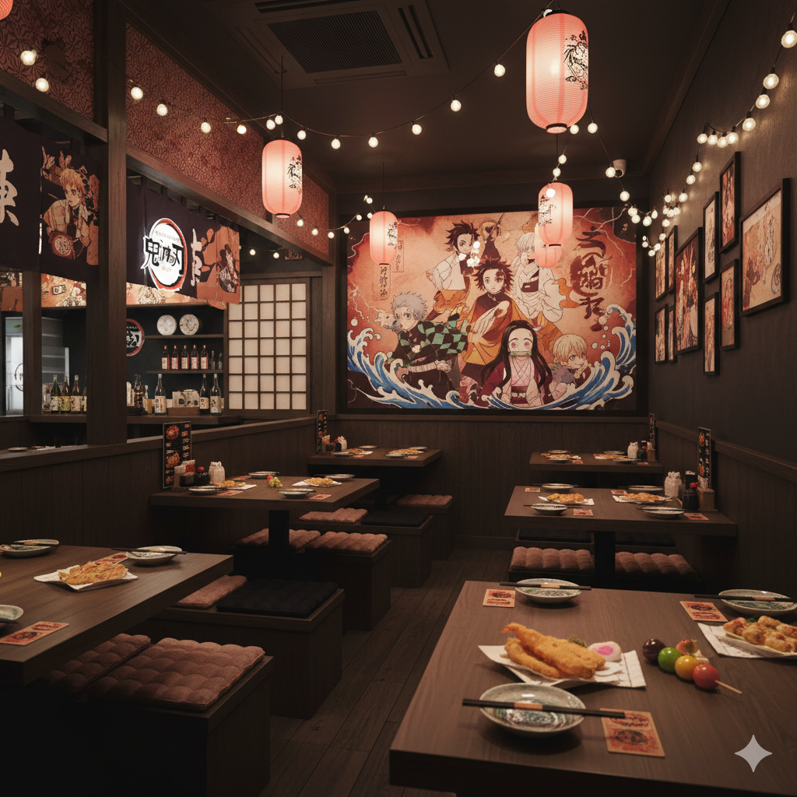

O Restaurante Kimetsu no Yaiba nasce da fusão entre a tradição da culinária japonesa e a grandiosidade de um dos animes mais amados do mundo. Inspirados na coragem de Tanjiro e na determinação dos Caçadores de Demônios, criamos um espaço que vai além de uma simples refeição: oferecemos uma experiência imersiva, onde cada detalhe foi pensado para transportar você ao universo de Demon Slayer.
Nossa proposta é unir gastronomia, arte e emoção. Os pratos são preparados com ingredientes selecionados e apresentados de forma única, homenageando as icônicas Respirações — cada sabor representa força, equilíbrio e harmonia, como se fosse uma técnica de combate transformada em culinária.
O ambiente foi cuidadosamente projetado para despertar a sensação de estar dentro da obra: desde a decoração inspirada na Mansão Borboleta, passando pela atmosfera misteriosa da Montanha Natagumo, até elementos que remetem ao estilo tradicional japonês, criando um cenário envolvente e temático.
Mais do que um restaurante, o Kimetsu no Yaiba – Sabores da Respiração é um convite a viver momentos especiais. Seja para um jantar entre amigos, uma celebração em família ou até mesmo um encontro inesquecível, aqui cada detalhe foi pensado para emocionar.
Venha descobrir um lugar onde a paixão pelo anime se encontra com a arte da culinária. Viva a experiência Kimetsu no Yaiba: sabores que respiram coragem, tradição e intensidade.